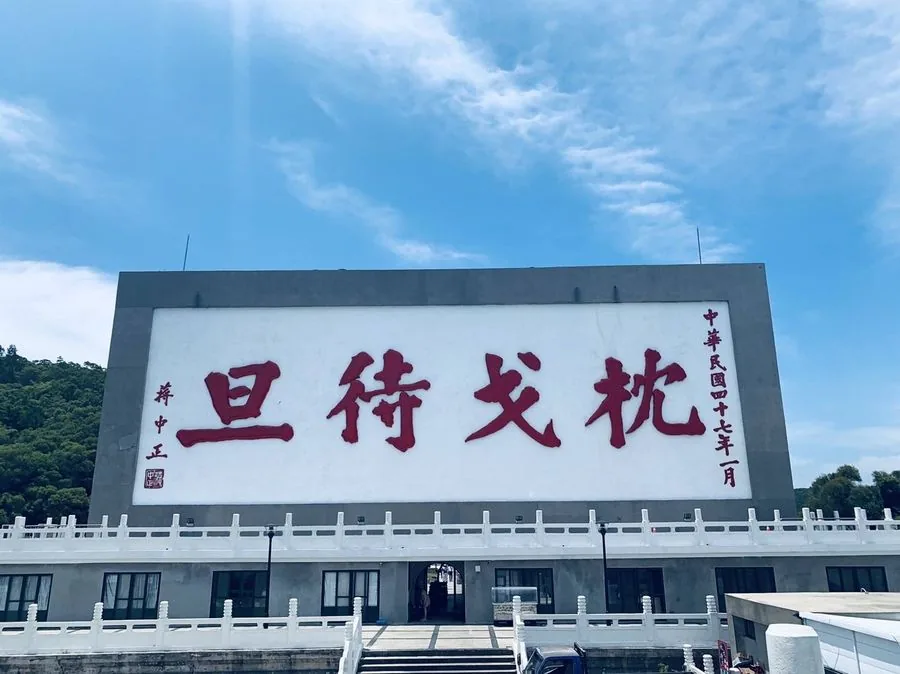
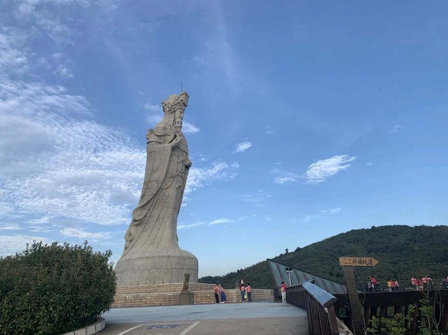
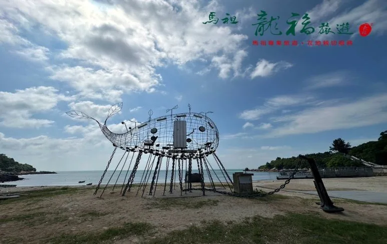

南竿



- 枕戈待旦1958 年蔣中正巡視馬祖時的題字，放大刻在山壁上，是南竿最醒目的地標。
- 北海坑道＋日間搖櫓花崗岩裡鑿出的井字形水道。櫓夫搖著小船帶你進去，只剩槳聲和回音。開放時段隨潮汐調整。
- 媽祖巨神像28.8 公尺高的媽祖站在山頭。繞她走一圈，十二幅浮雕講完她的一生。
- 星光祈福坑道入口上方懸著媽祖遶境的神轎。低頭走進坑道，就是鑽轎底祈福。
- 馬祖劍碑造型像一把直立的劍，是南竿的地標之一。
- 馬祖天后宮馬祖香火最盛的廟。相傳供桌前的石棺，是媽祖的靈穴。
- 藝術島作品〈海就是我的陸〉伊祐．噶照把舊船零件、錨鍊和花崗岩組在馬港沙灘上，像一艘在陸地生了根的船。